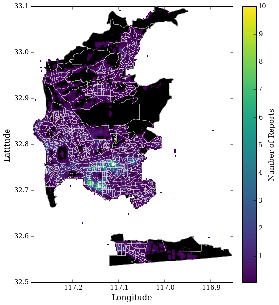

Predicting Graffiti Rates in San Diego
K. Schlesinger, partnering with the City of San Diego Performance & Analytics Department 2016/09/25Whether large or small, graffiti has a significant effect on neighborhood quality. At the most basic level, graffiti is quite expensive to repair, costing San Diego upwards of $5 million dollars in a given year1. It also has a detrimental effect on property values and can potentially increase crime rates. According to the Broken Windows theory2>, small crimes, such as vandalism, leads to residents disengaging from their neighborhoods. Over time, this community withdrawal makes the area more susceptible to serious crimes.
San Diego is committed to decreasing graffiti. In June, they announced a new "Get It Done" reporting system, where citizens can submit reports on a wide range of problems, like graffiti, tree hazards, and potholes. With this system, city government would like to learn more about the range of problems in different municipal areas and improve their response time.
Unfortunately, not every area is using the 311 system equally. The bulk of the ~20,000 reports stem from a small number of areas. Below, we have divided the San Diego municipal area into Census block groups. Overlaid is a heatmap, convolved with a Gaussian, showing the frequency of 311 reports in each area.
As you can see, most of the reports are clustered around the Balboa park area downtown. There are 864 blockgroups in the San Diego municipal area. 264 of these have filed less than 10 reports since the "Get It Done" app has gone lived. These areas account for 16% of the land area and 26% of the population of San Diego. Most importantly, we don't know if we're not getting reports from these areas because they don't have problems or they're simply just not using 311. The city could be unaware of serious problems in these areas, resulting in them underserving a large portion of their citizens.
Fortunately, we can use the information from blockgroups that are reporting to understand the needs of those that aren't.
Designing a Predictive Model: Feature Exploration
1: Graffiti Tracker: An Evaluation of the San Diego County Multi-Discipline Graffiti Abatement program